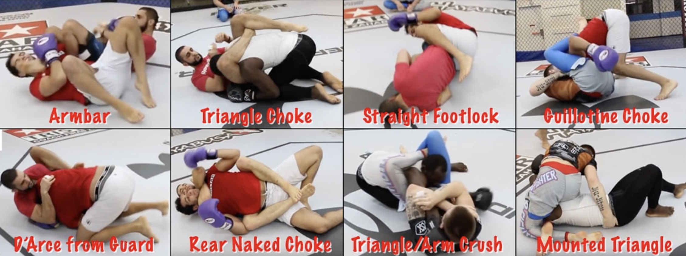
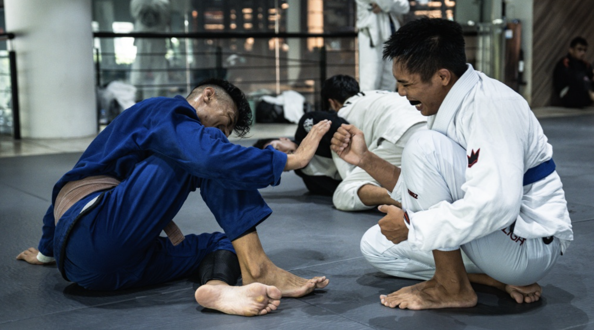
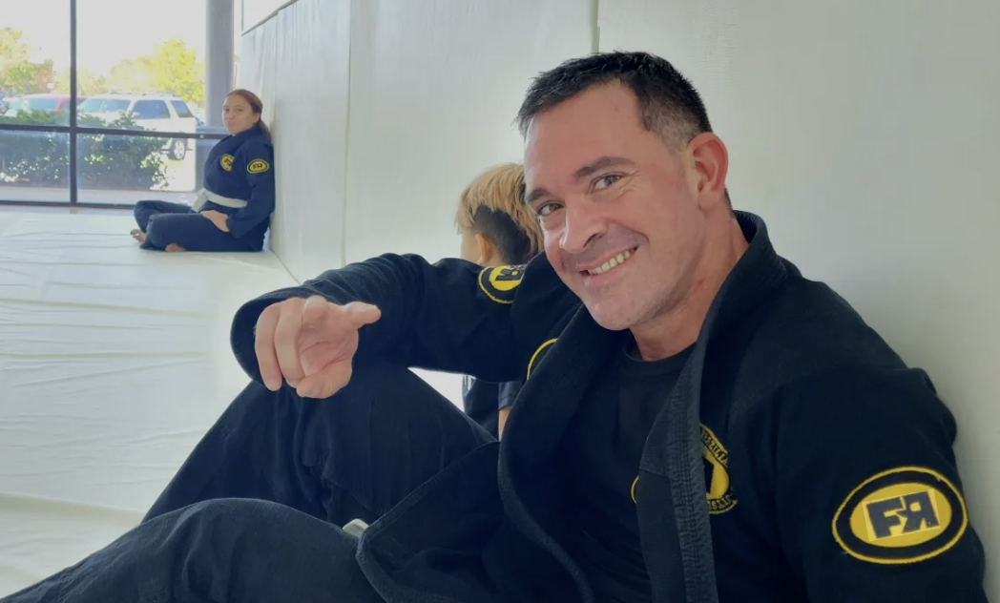
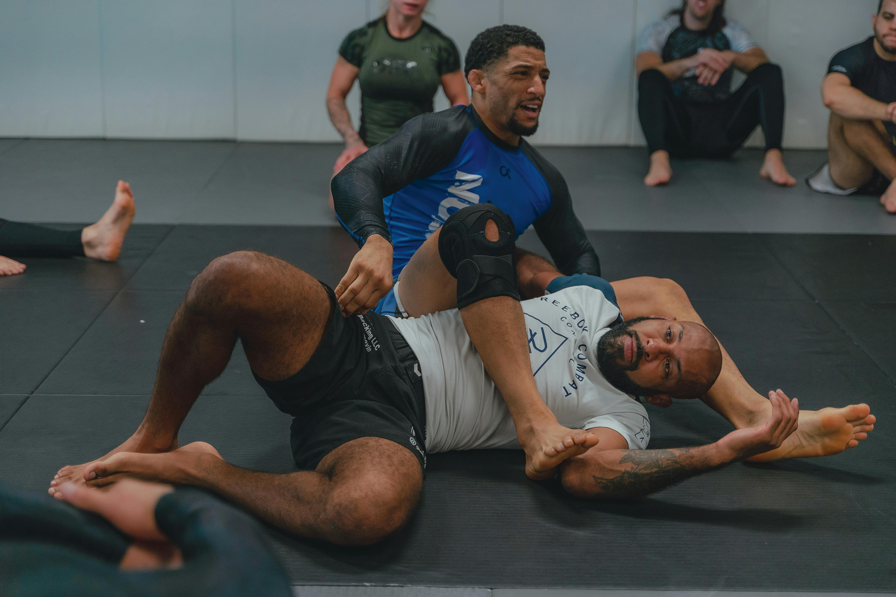
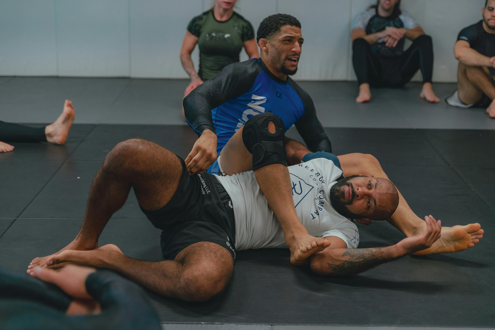
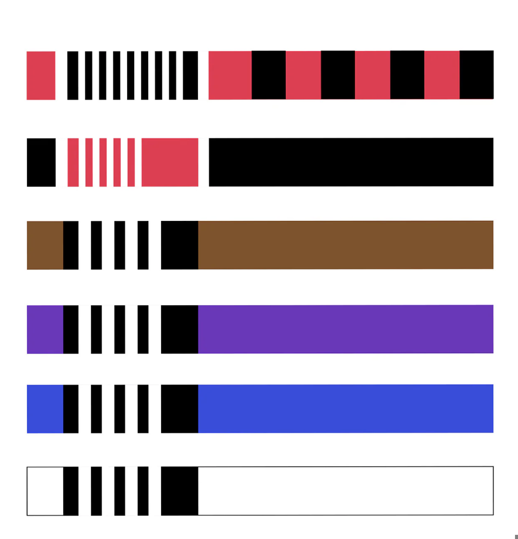

Discover the Joy of Brazilian Jiu-Jitsu
Brazilian Jiu-Jitsu is a martial art that teaches technique, discipline, and confidence through grappling and ground fighting.
Get StartedWhy people enjoy training BJJ
Self-Defense
Brazilian Jiu-Jitsu enables smaller individuals to defeat larger opponents through leverage and positioning..
Physical Fitness
Brazilian Jiu-Jitsu improves strength, endurance, flexibility, and overall physical health.
Mental Growth
BJJ develops discipline, patience, and problem-solving skills through live training.
History of Brazilian Jiu-Jitsu
Brazilian Jiu-Jitsu (BJJ) originated in the early 20th century when Japanese judoka Mitsuyo Maeda taught judo techniques in Brazil. His teachings were adapted and refined by Hélio Gracie and the Gracie family, who emphasized leverage and technique over strength. BJJ later gained worldwide recognition through mixed martial arts competitions, especially the UFC, where it proved effective against larger opponents.

Training styles and progression
Gi vs No-Gi
Gi training uses a traditional uniform and focuses on grip-based techniques. No-Gi training does not use the uniform and is often faster-paced, with techniques commonly used in MMA training.
- Gi: More grips, slower pace, detailed control.
- No-Gi: Faster pace, fewer grips, common for MMA-style grappling.
 

Belt System
Students progress through belt ranks from white belt to black belt, representing their improvement in skill, knowledge, and experience.
